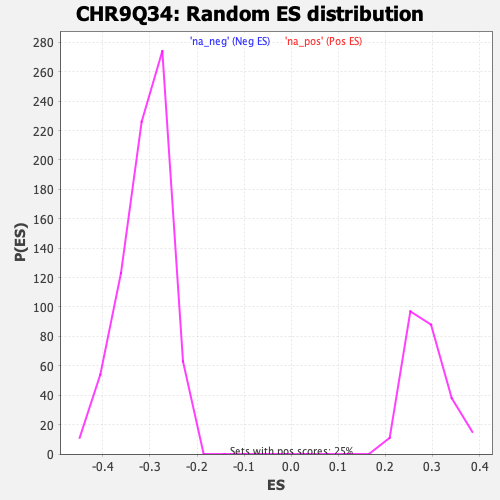

| | | Dataset | DE_genes |
| Phenotype | NoPhenotypeAvailable |
| Upregulated in class | na_neg |
| GeneSet | CHR9Q34 |
| Enrichment Score (ES) | -0.5469778 |
| Normalized Enrichment Score (NES) | -1.7647494 |
| Nominal p-value | 0.0 |
| FDR q-value | 0.010031249 |
| FWER p-Value | 0.011 |
Table: GSEA Results Summary
 Fig 1: Enrichment plot: CHR9Q34
Fig 1: Enrichment plot: CHR9Q34
Profile of the Running ES Score & Positions of GeneSet Members on the Rank Ordered List
| PROBE | GENE SYMBOL | GENE_TITLE | RANK IN GENE LIST | RANK METRIC SCORE | RUNNING ES | CORE ENRICHMENT | | 1 | FCN1 | | | 205 | 3.751 | 0.0073 | No |
| 2 | LCN2 | | | 216 | 3.629 | 0.0267 | No |
| 3 | RNU6ATAC | | | 329 | 2.564 | 0.0335 | No |
| 4 | TOR1B | | | 431 | 2.007 | 0.0380 | No |
| 5 | NTNG2 | | | 445 | 1.951 | 0.0479 | No |
| 6 | FUT7 | | | 459 | 1.891 | 0.0575 | No |
| 7 | ADAMTS13 | | | 649 | 1.378 | 0.0527 | No |
| 8 | COL5A1 | | | 673 | 1.328 | 0.0585 | No |
| 9 | TOR4A | | | 762 | 1.172 | 0.0593 | No |
| 10 | SLC2A6 | | | 827 | 1.078 | 0.0610 | No |
| 11 | IER5L | | | 862 | 1.014 | 0.0644 | No |
| 12 | PTGDS | | | 1083 | 0.768 | 0.0543 | No |
| 13 | C9orf116 | | | 1377 | 0.573 | 0.0383 | No |
| 14 | TOR1A | | | 1714 | 0.426 | 0.0187 | No |
| 15 | GPSM1 | | | 1722 | 0.420 | 0.0205 | No |
| 16 | DNM1 | | | 2133 | 0.286 | -0.0047 | No |
| 17 | GRIN1 | | | 2392 | 0.229 | -0.0203 | No |
| 18 | ODF2 | | | 2855 | 0.155 | -0.0496 | No |
| 19 | TUBBP5 | | | 3225 | 0.120 | -0.0731 | No |
| 20 | SNORD36B | | | 3774 | 0.083 | -0.1084 | No |
| 21 | SAPCD2 | | | 3813 | 0.081 | -0.1105 | No |
| 22 | LCN1 | | | 3893 | 0.076 | -0.1152 | No |
| 23 | ABO | | | 3965 | 0.072 | -0.1195 | No |
| 24 | PAEP | | | 4023 | 0.068 | -0.1228 | No |
| 25 | TTC16 | | | 4208 | 0.058 | -0.1345 | No |
| 26 | C9orf16 | | | 4211 | 0.058 | -0.1343 | No |
| 27 | C8G | | | 4407 | 0.047 | -0.1468 | No |
| 28 | GFI1B | | | 4689 | 0.032 | -0.1650 | No |
| 29 | SURF2 | | | 4696 | 0.032 | -0.1652 | No |
| 30 | QRFP | | | 4879 | 0.022 | -0.1770 | No |
| 31 | TPRN | | | 5031 | 0.014 | -0.1868 | No |
| 32 | MAMDC4 | | | 5326 | -0.000 | -0.2060 | No |
| 33 | PIP5KL1 | | | 5440 | -0.006 | -0.2133 | No |
| 34 | MIR126 | | | 5524 | -0.010 | -0.2187 | No |
| 35 | DBH | | | 5587 | -0.014 | -0.2227 | No |
| 36 | NUP214 | | | 5721 | -0.021 | -0.2312 | No |
| 37 | SETX | | | 5836 | -0.028 | -0.2385 | No |
| 38 | RNF208 | | | 5877 | -0.031 | -0.2410 | No |
| 39 | CIZ1 | | | 5889 | -0.032 | -0.2415 | No |
| 40 | PTGES2 | | | 5925 | -0.034 | -0.2436 | No |
| 41 | FNBP1 | | | 6102 | -0.046 | -0.2549 | No |
| 42 | SARDH | | | 6238 | -0.055 | -0.2634 | No |
| 43 | AK8 | | | 6243 | -0.055 | -0.2633 | No |
| 44 | KCNT1 | | | 6263 | -0.057 | -0.2643 | No |
| 45 | NOXA1 | | | 6560 | -0.076 | -0.2832 | No |
| 46 | CARD9 | | | 6574 | -0.078 | -0.2836 | No |
| 47 | SNAPC4 | | | 6843 | -0.098 | -0.3006 | No |
| 48 | CACFD1 | | | 6956 | -0.107 | -0.3073 | No |
| 49 | SNORD36A | | | 7532 | -0.154 | -0.3440 | No |
| 50 | STXBP1 | | | 7635 | -0.164 | -0.3498 | No |
| 51 | C9orf78 | | | 8021 | -0.201 | -0.3738 | No |
| 52 | GTF3C4 | | | 8470 | -0.248 | -0.4017 | No |
| 53 | SWI5 | | | 8494 | -0.250 | -0.4019 | No |
| 54 | CERCAM | | | 8612 | -0.263 | -0.4081 | No |
| 55 | DPM2 | | | 8616 | -0.263 | -0.4068 | No |
| 56 | DNLZ | | | 8932 | -0.302 | -0.4257 | No |
| 57 | ENDOG | | | 8951 | -0.304 | -0.4252 | No |
| 58 | SPTAN1 | | | 9051 | -0.317 | -0.4299 | No |
| 59 | INPP5E | | | 9081 | -0.320 | -0.4301 | No |
| 60 | TBC1D13 | | | 9250 | -0.341 | -0.4392 | No |
| 61 | PNPLA7 | | | 9385 | -0.356 | -0.4460 | No |
| 62 | SET | | | 9475 | -0.369 | -0.4497 | No |
| 63 | ABCA2 | | | 9491 | -0.372 | -0.4487 | No |
| 64 | TOR2A | | | 9598 | -0.387 | -0.4534 | No |
| 65 | PHYHD1 | | | 9613 | -0.390 | -0.4522 | No |
| 66 | SNORD36C | | | 9692 | -0.402 | -0.4551 | No |
| 67 | EXOSC2 | | | 9801 | -0.418 | -0.4598 | No |
| 68 | CAMSAP1 | | | 10002 | -0.447 | -0.4704 | No |
| 69 | PPP1R26 | | | 10184 | -0.475 | -0.4796 | No |
| 70 | FAM102A | | | 10214 | -0.479 | -0.4789 | No |
| 71 | FUBP3 | | | 10221 | -0.480 | -0.4766 | No |
| 72 | GLE1 | | | 10290 | -0.490 | -0.4784 | No |
| 73 | DOLPP1 | | | 10356 | -0.499 | -0.4799 | No |
| 74 | TMEM203 | | | 10655 | -0.546 | -0.4963 | No |
| 75 | SH3GLB2 | | | 10661 | -0.547 | -0.4937 | No |
| 76 | NPDC1 | | | 10913 | -0.584 | -0.5068 | No |
| 77 | NACC2 | | | 11025 | -0.602 | -0.5108 | No |
| 78 | ADAMTSL2 | | | 11037 | -0.604 | -0.5082 | No |
| 79 | PTGES | | | 11052 | -0.606 | -0.5057 | No |
| 80 | EDF1 | | | 11054 | -0.606 | -0.5024 | No |
| 81 | OLFM1 | | | 11086 | -0.613 | -0.5011 | No |
| 82 | ASS1 | | | 11089 | -0.613 | -0.4978 | No |
| 83 | WDR34 | | | 11168 | -0.630 | -0.4995 | No |
| 84 | UBAC1 | | | 11416 | -0.682 | -0.5118 | No |
| 85 | QSOX2 | | | 11475 | -0.693 | -0.5118 | No |
| 86 | LRRC8A | | | 11532 | -0.705 | -0.5116 | No |
| 87 | PRRX2 | | | 11562 | -0.711 | -0.5095 | No |
| 88 | FIBCD1 | | | 11573 | -0.714 | -0.5063 | No |
| 89 | NDOR1 | | | 11806 | -0.763 | -0.5172 | No |
| 90 | MED22 | | | 11863 | -0.775 | -0.5166 | No |
| 91 | FAM78A | | | 12004 | -0.806 | -0.5213 | No |
| 92 | SH2D3C | | | 12128 | -0.836 | -0.5247 | No |
| 93 | SLC27A4 | | | 12255 | -0.866 | -0.5282 | No |
| 94 | CRAT | | | 12406 | -0.905 | -0.5330 | No |
| 95 | SURF4 | | | 12621 | -0.959 | -0.5417 | Yes |
| 96 | MED27 | | | 12631 | -0.963 | -0.5370 | Yes |
| 97 | EXD3 | | | 12744 | -0.995 | -0.5388 | Yes |
| 98 | GPR107 | | | 12844 | -1.027 | -0.5396 | Yes |
| 99 | UAP1L1 | | | 12851 | -1.029 | -0.5343 | Yes |
| 100 | MRPL41 | | | 12955 | -1.062 | -0.5352 | Yes |
| 101 | NAIF1 | | | 12978 | -1.070 | -0.5307 | Yes |
| 102 | PRRC2B | | | 13042 | -1.088 | -0.5288 | Yes |
| 103 | GBGT1 | | | 13058 | -1.094 | -0.5238 | Yes |
| 104 | DOLK | | | 13068 | -1.096 | -0.5183 | Yes |
| 105 | REXO4 | | | 13071 | -1.097 | -0.5124 | Yes |
| 106 | NOTCH1 | | | 13105 | -1.107 | -0.5084 | Yes |
| 107 | PMPCA | | | 13150 | -1.121 | -0.5051 | Yes |
| 108 | FPGS | | | 13156 | -1.122 | -0.4993 | Yes |
| 109 | ZDHHC12 | | | 13260 | -1.159 | -0.4996 | Yes |
| 110 | NTMT1 | | | 13272 | -1.164 | -0.4939 | Yes |
| 111 | VAV2 | | | 13337 | -1.187 | -0.4916 | Yes |
| 112 | DDX31 | | | 13428 | -1.222 | -0.4907 | Yes |
| 113 | NCS1 | | | 13454 | -1.234 | -0.4855 | Yes |
| 114 | ABL1 | | | 13515 | -1.259 | -0.4825 | Yes |
| 115 | NSMF | | | 13538 | -1.269 | -0.4769 | Yes |
| 116 | GOLGA2 | | | 13552 | -1.275 | -0.4707 | Yes |
| 117 | COQ4 | | | 13615 | -1.298 | -0.4676 | Yes |
| 118 | ZMYND19 | | | 13642 | -1.308 | -0.4621 | Yes |
| 119 | BRD3 | | | 13680 | -1.321 | -0.4573 | Yes |
| 120 | RPL7A | | | 13738 | -1.354 | -0.4535 | Yes |
| 121 | ZER1 | | | 13763 | -1.364 | -0.4476 | Yes |
| 122 | RXRA | | | 13776 | -1.371 | -0.4408 | Yes |
| 123 | AK1 | | | 13803 | -1.383 | -0.4348 | Yes |
| 124 | SEC16A | | | 13924 | -1.435 | -0.4348 | Yes |
| 125 | CLIC3 | | | 13930 | -1.436 | -0.4272 | Yes |
| 126 | URM1 | | | 13945 | -1.441 | -0.4201 | Yes |
| 127 | PTRH1 | | | 13953 | -1.446 | -0.4126 | Yes |
| 128 | NRARP | | | 13963 | -1.451 | -0.4052 | Yes |
| 129 | TRUB2 | | | 14047 | -1.498 | -0.4024 | Yes |
| 130 | POMT1 | | | 14065 | -1.511 | -0.3951 | Yes |
| 131 | PKN3 | | | 14075 | -1.516 | -0.3874 | Yes |
| 132 | ANAPC2 | | | 14105 | -1.539 | -0.3808 | Yes |
| 133 | AGPAT2 | | | 14129 | -1.553 | -0.3737 | Yes |
| 134 | ARRDC1 | | | 14132 | -1.554 | -0.3653 | Yes |
| 135 | PHPT1 | | | 14141 | -1.559 | -0.3572 | Yes |
| 136 | TTF1 | | | 14248 | -1.630 | -0.3551 | Yes |
| 137 | USP20 | | | 14306 | -1.664 | -0.3497 | Yes |
| 138 | RABL6 | | | 14394 | -1.713 | -0.3459 | Yes |
| 139 | ASB6 | | | 14399 | -1.716 | -0.3367 | Yes |
| 140 | MAN1B1 | | | 14415 | -1.724 | -0.3282 | Yes |
| 141 | SNHG7 | | | 14425 | -1.734 | -0.3192 | Yes |
| 142 | NUP188 | | | 14456 | -1.759 | -0.3114 | Yes |
| 143 | ST6GALNAC4 | | | 14489 | -1.782 | -0.3037 | Yes |
| 144 | WDR5 | | | 14496 | -1.786 | -0.2942 | Yes |
| 145 | NELFB | | | 14533 | -1.813 | -0.2866 | Yes |
| 146 | GTF3C5 | | | 14554 | -1.832 | -0.2778 | Yes |
| 147 | SURF6 | | | 14563 | -1.842 | -0.2681 | Yes |
| 148 | AIF1L | | | 14576 | -1.850 | -0.2587 | Yes |
| 149 | LAMC3 | | | 14637 | -1.908 | -0.2521 | Yes |
| 150 | TRAF2 | | | 14680 | -1.950 | -0.2441 | Yes |
| 151 | LCN6 | | | 14793 | -2.059 | -0.2401 | Yes |
| 152 | MRPS2 | | | 14877 | -2.134 | -0.2337 | Yes |
| 153 | TMEM141 | | | 14881 | -2.139 | -0.2221 | Yes |
| 154 | SSNA1 | | | 14919 | -2.188 | -0.2125 | Yes |
| 155 | TSC1 | | | 14940 | -2.219 | -0.2015 | Yes |
| 156 | EHMT1 | | | 14963 | -2.256 | -0.1905 | Yes |
| 157 | DPP7 | | | 14973 | -2.276 | -0.1786 | Yes |
| 158 | SURF1 | | | 15006 | -2.313 | -0.1679 | Yes |
| 159 | RAPGEF1 | | | 15030 | -2.342 | -0.1565 | Yes |
| 160 | UCK1 | | | 15036 | -2.355 | -0.1438 | Yes |
| 161 | CDK9 | | | 15081 | -2.435 | -0.1333 | Yes |
| 162 | EGFL7 | | | 15091 | -2.459 | -0.1203 | Yes |
| 163 | ENG | | | 15171 | -2.577 | -0.1112 | Yes |
| 164 | LCN10 | | | 15354 | -3.201 | -0.1055 | Yes |
| 165 | FBXW5 | | | 15403 | -3.612 | -0.0887 | Yes |
| 166 | ST6GALNAC6 | | | 15415 | -3.728 | -0.0688 | Yes |
| 167 | RALGDS | | | 15431 | -3.980 | -0.0478 | Yes |
| 168 | SLC25A25 | | | 15438 | -4.038 | -0.0260 | Yes |
| 169 | TUBB4B | | | 15465 | -5.085 | 0.0004 | Yes |
Table: GSEA details [plain text format]

Fig 2: CHR9Q34: Random ES distribution
Gene set null distribution of ES for CHR9Q34